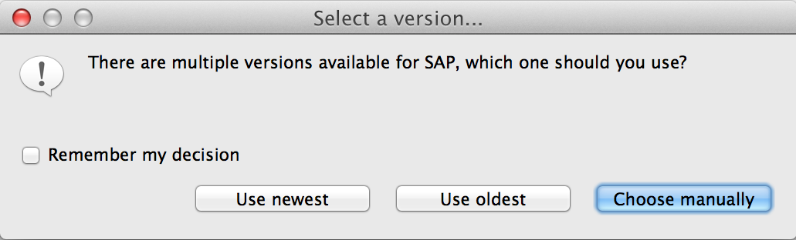
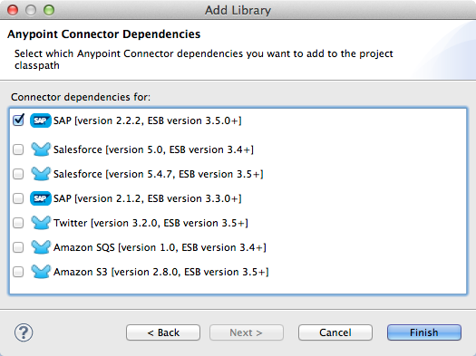
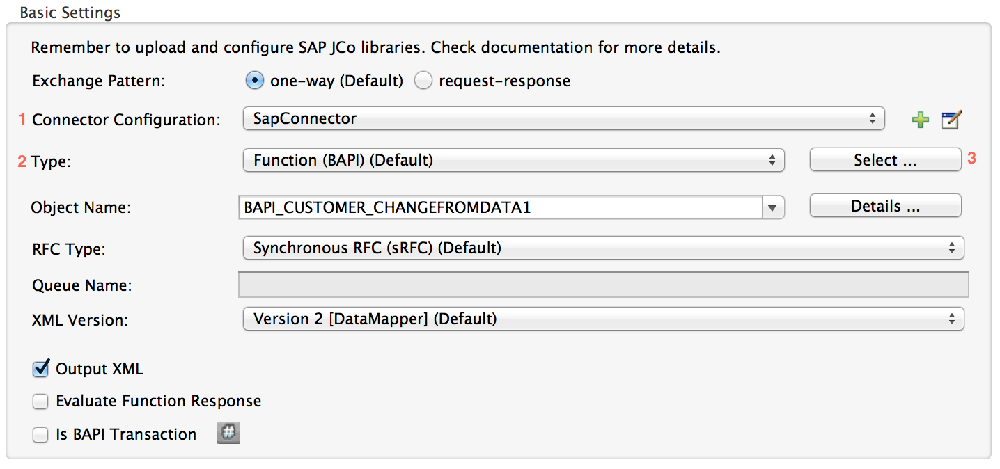
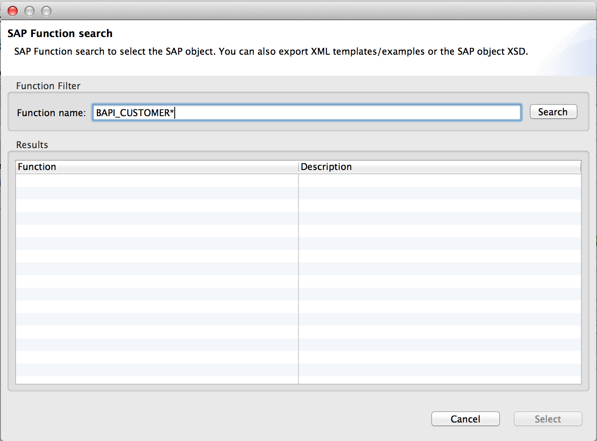
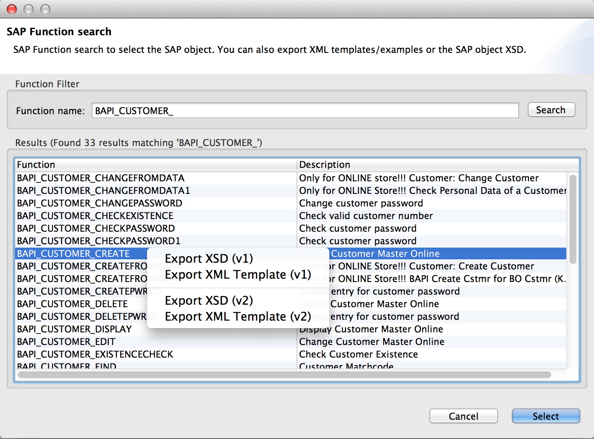
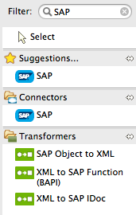
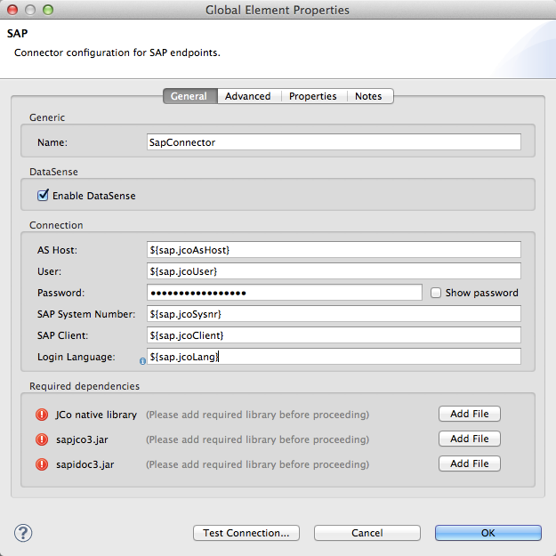
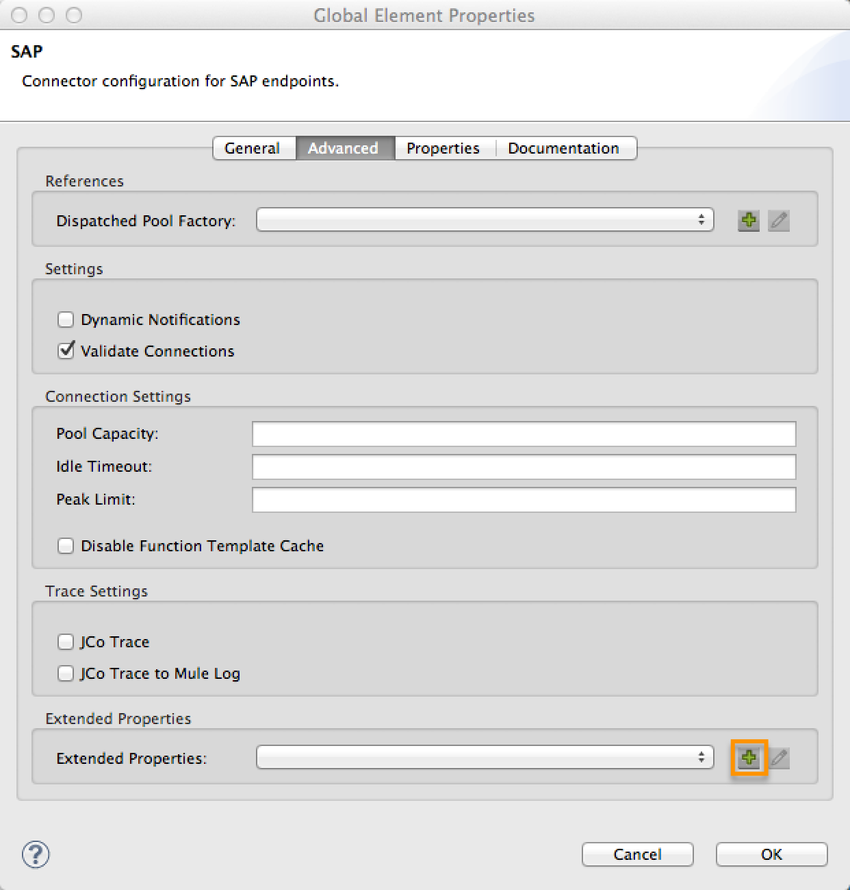
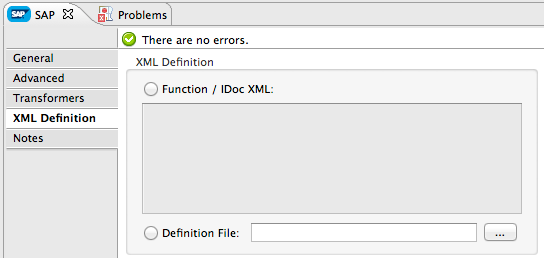

SAP Connector
*Premium*
| This connector requires a separate license. Contact MuleSoft to evaluate or use this connector in production. |
Overview
Mule ESB supports SAP integration through our Anypoint Connector for SAP, which is an SAP-certified Java connector that leverages the SAP Java Connector (JCo) libraries. The SAP connector enables Mule applications to:
-
Send IDocs over tRFC and qRFC
-
Receive IDocs over tRFC and qRFC
-
Transform all SAP objects (JCoFunction & IDocs) both to and from XML
-
Execute Business Application Programming Interface (BAPI) functions using all of the following types of Remote Function Calls (RFC)
-
sRFC (synchronous RFC)
-
tRFC (transactional RFC)
-
qRFC (queued RFC)
-
-
Act as a JCo Server to be called as a BAPI over the following protocols:
-
sRFC
-
tRFC
-
qRFC
-
Installation
You can install a connector in Anypoint Studio using the instructions in Installing a Connector from Anypoint Exchange.
Prerequisites
This connector requires the following SAP libraries:
-
Java Connector (JCo) library (Platform-dependent)
-
IDoc library
Note that the JCo library is dependent on both your hardware platform and operating system, so you need to download the correct version for the local drive running Anypoint Studio.
Three files are required for both libraries:
-
Both multi-platform Java libraries:
-
sapjco3.jar
-
sapidoc3.jar
-
-
One of the JCo platform-specific native libraries:
-
sapjco3.dll (Windows)
-
libsapjco3.jnilib (Mac OS X)
-
libsapjco3.so (Linux)
-
| Do not change the names of any of the SAP JCo library files from their original names, as they won’t be recognized by JCo. Because of this, Studio validates against unfamiliar JCo file names. |
| If you deploy to a platform that is different from the one used for development, you must change the native library before generating the zip file. |
Download the requisite SAP libraries. To perform this download, you must have an SAP user ID.
You add the SAP libraries to your Studio project when configuring the SAP global element. For details, see Adding the SAP Libraries below.
| To enable SAP to communicate with Mule, you need to perform additional SAP configuration. SAP configuration facilitates many options, which should be set by your SAP system administrator. |
Adding the SAP Connector to the Classpath
Specifying the location of the SAP connector in your system classpath enables you to run/debug your project locally and to create custom Java code in your project that uses the classes.
The first time you try to add any of the SAP components to your Mule configuration file, the SAP dependencies that match the version of the project ESB runtime get added automatically. In case there is more than one SAP transport dependency for the ESB runtime configured in the project, then you will be prompted to select the one you want to use.

To add the SAP connector manually to the classpath, complete the following steps:
-
Right-click the top of the project in the Package Explorer pane.
-
Select Build Path > Add Libraries …
-
Select the library type Anypoint Connectors Dependencies* and then click *Next.
-
On the Extensions Classpath list, check the SAP extension.

Configuration
You can employ the SAP connector in any of the configurations listed below.
| Configuration | Activity |
|---|---|
IDoc Inbound Endpoint |
The SAP connector registers with a SAP server Gateway using a specific Program ID. This enables it to send and receive IDocs sent to that destination. |
Function Inbound Endpoint |
The SAP connector registers with a SAP server Gateway using a specific Program ID that allows the SAP transport to be called as a Function or BAPI using the RFC protocol drawn from ABAP code in SAP. |
IDoc Outbound Endpoint |
The SAP connector sends an IDoc generated within Mule ESB to a SAP server. |
Function Outbound Endpoint |
The SAP connector calls a Function or BAPI that resides on a SAP server. |
The SAP connector uses JCo as the underlying SAP integration technology. The Inbound Endpoints (both IDoc and Function) start a JCo server, while the Outbound Endpoints rely on the JCo client.
The connector allows both synchronous and asynchronous communications. By definition, functions are synchronous and IDocs are asynchronous.
-
IDocs can be sent and received over tRFC and qRFC
-
Functions (both inbound and outbound) allow sRFC, tRFC and qRFC
|
If the SAP Connector is configured as a function, the value of the Function Name property references different objects, depending on context:
|
As from version 2.1.0, the SAP Outbound Endpoint can also be used to generate a template of a valid XML that represents a BAPI or an IDoc. In order to achieve this. the type should be configured to function-metadata or idoc-metadata and the Function Name set to hold the name of the BAPI or IDoc.
SAP Connector and DataSense
If you intend to employ an SAP endpoint in conjunction with a DataMapper transformer to map and transform data, you can make use of Anypoint Studio’s DataSense functionality.
-
Follow the detailed DataSense instructions to drop the endpoint into your flow, then test the connection to SAP using the SAP Connector.
-
In your flow, define the Object Name in the endpoint which should be the complete name of the BAPI or IDoc. You can also follow the instructions in the following section to find the BAPI or IDoc.
-
For a more DataMapper-friendly experience, use the XML Version selector to select
XML Version 2(DataMapper).XML Version 1is functional, but the mapping experience is inferior to that available with version 2. -
Drop a DataMapper into your flow, before or after the SAP endpoint, then click the DataMapper transformer to display the DataMapper properties editor. Having collected metadata from SAP, Mule automatically prescribes the input or output (relative to the position of the SAP endpoint to DataMapper) to use in mapping and transforming data.
-
Define specific mappings to or from SAP, then save your flow.
Finding the SAP object
Since Mule runtime version 3.5.0 and SAP connector version 2.2.2, Studio allows searching BAPIs or IDocs.

-
Make sure you have selected the Connector Configuration.
-
Specify the SAP object Type to search (IDoc or Function).
-
Click the Select button to open the find SAP Object form.

-
Type a valid filter. (At least one character should be typed in.) You can use the wildcard '*' and by default the filter type will be 'starts with'.
-
Once results are displayed, you can right-click each row to export the XML or XSD representation of the BAPI (XML version 1 or 2) or IDoc. When a row in the result is selected, you can then press the Select button to set the value of the Object Name.

SAP Transformers
The SAP endpoints receive and transmit SAP objects, which must be transformed to and from XML within your Mule flow. MuleSoft bundles three SAP transformers specifically designed to handle such transformation:
-
SAP Object to XML
-
XML to SAP Function (BAPI)
-
XML to SAP IDoc
These are available in the Transformers group on the Studio Palette. Entering SAP into the filter input box above the palette displays both the SAP Connector and the SAP Transformers (below):

Click and drag the SAP Object to XML transformer after an SAP inbound endpoint (or a SAP outbound endpoint if the endpoint is a function and expects a response).
|
With DataSense enablement on the SAP endpoint came a new attribute,` outputXml However, if you set this value to |
Click and drag the XML to SAP Function (BAPI) or the XML to SAP IDoc transformers before your SAP outbound endpoint within your Mule application flow.
|
Since version 2.2.2 of the SAP connector (released with Mule ESB 3.5.0) it is no longer required to use the explicit transformers. The input to the outbound-endpoint can be both the SAP Object created by the XML to SAP Function (BAPI) or the XML to SAP IDoc as well as any type (String, byte[] or InputStream) that represents the XML document. As mentioned before, in order to avoid using the SAP Object to XML you can now use the |
SAP Inbound Endpoint Requirements
If you are configuring a SAP Inbound Endpoint (JCo Server), and you want to use the service name (and not the port value) as the value of jcoGwService attribute, you must modify your OS services file, which is:
-
/etc/servicesfor a Unix-based OS -
C:\Windows\System32\drivers\etc\servicesfor Windows
In the above file, you must add your gateway (which is configured through the jcoGwService attribute or the jco.server.gwserv /jco.client.gwserv property). Just add the gateway; you don’t need to add the entire service mapping list.
For example, to set the following, jcoGwService=sapgw00, add the following string:
1
bq. sapgw00 3300/tcp
Port 3300 is predefined by SAP, so if you need to validate other port numbers based on your SAP instance number, you can check the complete list of service-to-port mappings.
This configuration can be avoided if using the port (for example 3300) as the value of the jcoGwService attribute (or jco.server.gwserv /jco.client.gwserv properties).
Connector Global Element
The SAP connector object holds the configuration properties that allow you to connect to the SAP server. When an SAP connector is defined as a Global Element all SAP endpoints use its connection parameters; otherwise each SAP endpoint uses its own connection parameters to connect to the SAP server.
To create an SAP connector, complete the following steps:
-
Click the Global Elements tab below the Message Flow canvas.
-
Click Create, then click the arrow icon to the left of Connector Configurations.
-
Select SAP from the drop-down list of available connectors, then click OK.
-
In the Global Elements Properties pane, enter the required parameters for defining an SAP connection, which your SAP system administrator should supply.
Connection Properties
The SAP global element allows you to define connection properties as well as to easily add the SAP .jar libraries to your project.
Many SAP connection properties exist. For ease of use, the SAP connector only shows the most common properties as connector parameters. To configure a property that is not listed in the Properties pane, consult Extended Properties.

At a minimum, provide values for the following attributes:
-
In the Name field, enter an appropriate name for the Connector used by the SAP endpoints in your project.
-
As in other connectors, DataSense can be globally disabled by unchecking the Enable DataSense checkbox.
-
In the AS Host field, enter the name (URL or IP address) of the SAP system.
-
In the User and Password fields, enter the username and password of a user authorized to connect to the SAP system.
-
In the SAP System Number field, enter the system number used to connect to the SAP system.
-
In the SAP Client field, enter the SAP client ID (usually a number) used to connect to the SAP system.
-
In the Login Language field, enter the language that will be used in the SAP connection, for example EN for English.
Adding the SAP Libraries
As explained in Prerequisites, the SAP connector requires the platform-dependent SAP JCo library as well as the multi-platform IDoc library. To add these libraries to your project, click the Add File button next to each of the listed libraries, then browse to and select the appropriate file. The files sapjco3.jar and sapidoc3.jar are platform-independent; for JCo Native Library, you must have the correct platform-dependent library file, such as sapjco3.dll, libsapjco3.jnilib or libsapjco3.so.
The SAP libraries will be automatically added to the project classpath.
| If you are adding the JCo libraries and configuring the classpath manually, since SAP JCo 3.0.11, in order to have DataSense working, you need to make sure that the sapjco3.jar and the corresponding native library are not in the same directory. |
Extended Properties
To provide additional configuration properties, you can define a Spring bean global element representing a Map (java.util.Map) instance. This can be used to configure, among other properties, SCN (Secure Connections), or advanced pooling capabilities.
In this case, you must know the configuration property as defined by SAP. You can check the configuration properties list.
To define extended properties for the SAP global connector, complete the following steps:
-
Navigate to the Advanced tab on the Global Elements Properties pane.
-
Locate the Extended Properties section at the bottom of the window.
-
Click the plus icon next to the Extended Properties drop-down menu to define additional configuration properties.

Prioritizing Connection Properties
Properties for SAP connections, both inbound and outbound, can be configured in numerous places, which may cause an overlap of connection parameters. The following list details the priorities accorded to values specified in different places, with the highest priority level listed first.
-
Attributes defined at the SAP Inbound Endpoint and SAP Outbound Endpoint level, such as User, Password, Gateway Host, etc.
-
Properties in the Address attribute at the SAP Inbound Endpoint and SAP Outbound Endpoint levels. (However, MuleSoft does not recommend using the Address attribute for SAP connections.)
-
Properties inside the Map configured in the Extended Properties pane for the JCo client or server at the SAP Inbound Endpoint and SAP Outbound Endpoint levels.
-
Attributes configured at the SAP Connector Configuration level (i.e., AS Host, User Password, SAP Client, etc.).
-
Properties inside the Map configured in the Extended Properties pane at the SAP Connector Configuration level.
-
Default values.
XML Definition
| With DataSense support, the recommended way to generate the XML definitions is using DataMapper (and XML version 2 for BAPIs/Functions). |
The SAP transport bundles SAP Transformers that convert the XML documents exchanged between the endpoints and SAP into corresponding SAP objects that the endpoints can handle.
For more information about using XML definitions without DataMapper and DataSense, see XML Definitions.
Inbound Endpoint
An Inbound Endpoint receives IDocs and Functions over RFC. To implement a SAP Inbound Endpoint, complete the following steps:
-
Drag and drop the SAP Connector from the Connectors group on the palette to the beginning of your flow.
-
Double-click the SAP icon to open the Endpoint Properties pane, then define your endpoint’s properties.
-
In the Type drop-down menu, select whether to receive IDocs or Function calls.

| After selecting the Endpoint type, the properties editor will automatically enable or disable parameter input boxes according to the selected endpoint type. For example, after selecting IDoc as the Endpoint Type, function-related parameters such as the Function Name input box or the Evaluate Function Response checkbox will be disabled. |
| Since the JCo server needs to register with the SAP instance, you must specify both the client and server configuration attributes. |
Inbound Endpoint Properties
The following table lists Inbound Endpoint properties.
| Field | XML Attribute |
Studio Properties Editor Tab |
Description | Default Value |
|---|---|---|---|---|
Display Name |
name |
General |
The reference name of the endpoint used internally in Studio. |
|
All Exchange Patterns |
exchange-pattern |
General |
The available options are request-response and one-way. |
|
Address |
address |
Advanced |
The standard way to provide endpoint properties. For more information check: Endpoint Address. |
|
Type |
type |
General |
The type of SAP object this endpoint will process (i.e., function or idoc) |
|
RFC Type |
rfcType |
General |
The type of RFC the endpoint used to receive a function or IDoc. The available options are srfc (which is sync with no TID handler), trfc and qrfc (both of which are async, with a TID handler). |
|
Object Name |
functionName |
General |
If the type is function then this is the name of the BAPI function that will be handled. If no value is provided, then a generic handler is configured to receive all calls. |
|
XML Version |
xmlVersion |
General |
The version of the output/input XML. IDocs only support Version 1, while for functions you have Version 1 (default) and Version 2 (DataMapper friendly) |
1 |
Output XML |
outputXml |
General |
Whether the endpoint should set as payload the XML representation (String) of the SAP Object (Function or IDoc) or the SapObject wrapper itself. Setting this flag to |
|
SAP Client |
jcoClient |
Advanced |
The SAP client. This is usually an integer, such as 100. |
|
User |
jcoUser |
Advanced |
The logon user for password-based authentication. |
|
Password |
jcoPasswd |
Advanced |
The logon password associated with the logon user for password-based authentication. |
|
Login Language |
jcoLang |
Advanced |
The login language. If not defined, the default user language is used. |
|
AS Host |
jcoAsHost |
Advanced |
The SAP application server host. Use either the IP address or server name. |
|
SAP System Number |
jcoSysnr |
Advanced |
The SAP system number. |
|
Pool Capacity |
jcoPoolCapacity |
Advanced |
The maximum number of idle connections kept open by the destination. No connection pooling takes place when the value is 0. |
5 |
Peak Limit |
jcoPeakLimit |
Advanced |
The maximum number of simultaneously active connections that can be created for a destination. |
10 |
Gateway Host |
jcoGwHost |
General |
The gateway host on which the server should be registered. |
|
Gateway Service |
jcoGwService |
General |
The gateway service, i.e. the port on which registration is performed. |
|
Program ID |
jcoProgramId |
General |
The program ID with which the registration is performed. |
|
Connection Count |
jcoConnectionCount |
General |
The number of connections that should be registered at the gateway. |
2 |
Extended Properties |
jcoClientExtendedProperties-ref |
Advanced |
A Reference to |
|
IDoc Endpoint Properties
To configure an IDoc Server, complete the following steps.
-
Starting from the General tab of the SAP Endpoint properties editor, set the Type property to IDoc.
-
Define the RFC Type parameter as Transactional RFC (tRFC) or Queued RFC (qRFC). IDocs are asynchronous by definition, so they cannot be received over Synchronous RFC (sRFC).
-
Configuring the TID Handler. The default is an in-memory TID handler.
-
Specify the following required attributes:
-
Gateway Host
-
Gateway Service
-
Program ID
-
-
Click the Advanced tab, then specify the required connection attributes, as necessary, for the endpoint or the connector. This might include, for example, SAP Client, User, Password, AS Host and SAP System Number.
Function Endpoint Properties
To configure the connector as an RFC Server, complete the following steps.
-
Set the type parameter to
function. -
Define the rfcType parameter to
trfc,qrfcorsrfc. If rfcType is not specified,srfcis used by default. -
When rfcType is
trfcorqrfc, you may also need to Configuring the TID Handler. -
Specify the following required attributes: jcoGwHost, jcoGwService, jcoProgramId.
-
Specify the required connection attributes, as necessary, for the endpoint or the connector. This might include, for example, jcoClient, jcoUser, jcoPasswd, jcoAsHost, jcoSysnr.
-
In the General tab, set the Type property to
Function (BAPI). -
Define the RFC Type parameter as
Transactional RFC (tRFC),Queued RFC (qRFC)orSynchronous RFC (sRFC). -
If the RFC Type is either
Transactional RFC (tRFC)orQueued RFC (qRFC), then Configuring the TID Handler. -
Specify the following required attributes:
-
Gateway Host
-
Gateway Service
-
Program ID
-
-
In the Advanced tab, specify the required connection attributes, as necessary, for the endpoint or the connector. This might include, for example, SAP Client, User, Password, AS Host and SAP System Number.
Configuring the TID Handler
The TID handler (Transaction ID) is an important component for tRFC and qRFC, ensuring that Mule ESB does not process the same transaction twice.
To define the TID handler, complete the following steps.
-
In the General tab of the Endpoint Properties window, locate the TID Store section near the bottom of the window.
-
From the Type drop-down menu, select one of the three options for the TID handler:
-
None: No TID handler.
-
Default In Memory TID Store: Facilitates the sharing of TIDs within the same Mule ESB instance. If the Endpoint Type is
tRFCorqRFC, and no TID store is configured, then this default store is used. -
Object Store TID Store: This wrapper uses existing Mule ESB object stores to store and share TIDs. If you need multiple Mule ESB server instances, you should configure a JDBC Object Store so that you can share TIDs among the instances.
-
| When the Endpoint Type is set to Synchronous RFC (sRFC), or it is not provided (thus defaulting to Synchronous RFC), then no TID handler is configured. Furthermore, if a TID handler has been configured in the XML file, it will be ignored. |
To configure an In-memory TID Store, you must observe the following:
-
the In-memory TID Store won’t work as expected if you have multiple Mule ESB instances that share the same program id. (This is because the SAP gateway load-balances across all registered SAP servers that share the same program id)
-
the Endpoint Type should be trfc or qrfc
-
configuring the child element
<sap:default-in-memory-tid-store/>is optional, since the in-memory handler is the default option
Outbound Endpoint
An Outbound Endpoint executes functions (BAPIs), or it sends IDocs over RFC. Properties for an outbound endpoint resemble those of an inbound endpoint, and you configure them through the properties editor.
In an Outbound Endpoint, the IDoc or Function can be built in one of two ways:
-
defined as the endpoint’s payload (created by DataMapper for example)
-
obtained from an XML file
To manually define the IDoc or Function, complete the following steps.
-
Navigate to the XML Definition tab within the properties editor.
-
Type or copy and paste the IDoc or Function into the input box below the Function / IDoc XML checkbox.
To obtain the IDoc or Function from an XML file, click Definition File, and do one of the following:
-
type the full path to the file
-
click … to navigate to the file

If you neither define the payload, nor specify a definition file, Mule builds the payload by applying a default template to the data received by the endpoint.
Outbound Endpoint Properties
The following table lists Outbound Endpoint properties:
| Field | XML Attribute | Studio Properties Editor Tab | Description | Default Value |
|---|---|---|---|---|
Display Name |
name |
General |
The reference name of the endpoint used internally by Mule configuration. |
|
All Exchange Patterns |
exchange-pattern |
General |
The available options are request-response and one-way. |
|
Address |
address |
Advanced |
The standard way to provide endpoint properties. For more information check: Endpoint Address. |
|
Type |
type |
General |
The type of SAP object this endpoint will process (i.e., function or idoc). Starting in 2.1.0 function-metadata and idoc-metadata can be used to retrieved XML structure for a given BAPI or IDoc. |
|
RFC Type |
rfcType |
General |
The type of RFC the endpoint used to receive a function or IDoc. The available options are srfc (which is sync with no TID handler), trfc and qrfc (both of which are async, with a TID handler). |
|
Queue Name |
queueName |
General |
If the RFC type is qrfc, then this will be the name of the queue. |
|
Function Name |
functionName |
General |
If the type is function then this is the name of the BAPI function that will be executed. When a metadata type is selected then this attribute holds the name of the BAPI or IDoc whose metadata should be retrieved. |
|
XML Version |
xmlVersion |
General |
When type is one of metadata types, then the version of the XML to generate (There are two possible XML versions for functions) |
1 |
Output XML |
outputXml |
General |
Whether the endpoint should set as payload the XML representation (String) of the SAP Object (Function or IDoc) or the SapObject wrapper itself. Setting this flag to 'true' removes the need for the object-to-xml transformer. |
|
Evaluate Function Response (checkbox) |
evaluateFunctionResponse |
General |
When the type is function, a |
|
Is BAPI Transaction (checkbox) |
bapiTransaction |
General |
When checked, either BAPI_TRANSACTION_COMMIT or BAPI_TRANSACTION_ROLLBACK is called at the end of the transaction, depending on the result of that transaction. |
|
Definition File |
definitionFile |
XML Definition |
The path to the template definition file of either the function to be executed or the IDoc to be sent. |
|
IDoc Version |
idocVersion |
Advanced |
When the type is idoc, this version is used when sending the IDoc. Values for the IDoc version correspond to IDOC_VERSION_xxxx constants in |
0 (IDOC_VERSION_DEFAULT). |
SAP Client |
jcoClient |
Advanced |
The SAP client. This is usually an integer, such as 100. |
|
User |
jcoUser |
Advanced |
The logon user for password-based authentication. |
|
Password |
jcoPasswd |
Advanced |
The logon password associated with the logon user for password based authentication. |
|
Login Language |
jcoLang |
Advanced |
The login language. If not defined, the default user language is used. |
|
AS Host |
jcoAsHost |
Advanced |
The SAP application server host. Use either the IP address or server name. |
|
SAP System Number |
jcoSysnr |
Advanced |
The SAP system number. |
|
Pool Capacity |
jcoPoolCapacity |
Advanced |
The maximum number of idle connections kept open by the destination. No connection pooling takes place when the value is 0. |
5 |
Peak Limit |
jcoPeakLimit |
Advanced |
The maximum number of simultaneously active connections that can be created for a destination. |
10 |
Extended Properties |
jcoClientExtendedProperties-ref |
Advanced |
A Reference to |
|
Transactions
While the SAP outbound endpoint supports Transactions, distributed transactions are not supported, since the JCo libraries do not support XA.
To define transaction attributes, navigate to the General tab of the properties editor, then locate the Transaction section near the bottom of the window.

The following table lists transaction attributes:
| Field | XML Attribute | Description | Default Value |
|---|---|---|---|
Type |
n/a |
No Transaction or Transaction |
No Transaction |
Action |
action |
The action attribute is part of the Mule ESB transaction standard and can have the following values: NONE, ALWAYS_BEGIN, BEGIN_OR_JOIN, ALWAYS_JOIN and JOIN_IF_POSSIBLE |
NONE |
Timeout |
timeout |
Timeout for the transaction (ms). |
|
Since version 2.1.0, the BAPI transaction attribute can be found in Client Settings pane in General options tab.
| For additional information, consult the http://www.mulesoft.org/documentation/display/MULE3USER/MuleSoft+Enterprise+Java+Connector+for+SAP+Reference[Enterprise Java Connector for SAP |